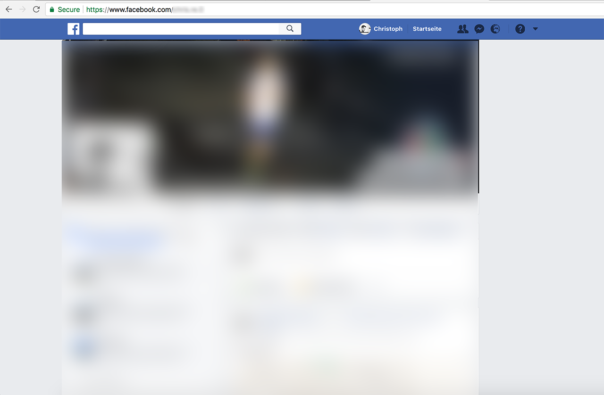

My product has a Web Frontend
And what I might want to think about
about:me
UX Engineer; Speaker; Teamlead; Star Wars Character
The User
What does he care about?
Get a task done
Let's imagine you have ...
... great product which creates lots of user value(TM)
So let's skip the difficult part ...
aka ...
Product Development
What to think about for your Web Frontend?
But wait Christoph, it works already!
Good is the enemy of great!
Wait, but done is better than perfect?
So, great is the enemy of good?
WTF?
Good is the enemy of great
Let's make it better
The User
What do they have in common with a PO?
They want to get sh*t done
How do POs get stuff done?
May the force be with us
Waterfall, AgileTM, Agile, agile, Scrum, Kanban, Scrumban, Lean, etc.
What helps the User?
Usability
Usability is the degree to which a software can be used by specified consumers to achieve quantified objectives with effectiveness, efficiency, and satisfaction in a quantified context of use
Universal Usability
Universal usability refers to the design of information and communications products and services that are usable for every citizen.
P.O.U.R.
- perceivable
- operable
- understandable
- robust
perceivable
all users can have the same experience
colors, font-sizes, video captions, text alternative
operable
all elements and controls on the website are usable
keyboard control, timed and blinking content
understandable
content is clear and easy to understanding
error handling, reading level, motive
robust
can access all content with a wide range of technologies
coding standards, browser accessibility, assistive technologies
not P.O.U.R.
Always ask
What is this thing and what does it do?Karl Groves
USE THE PLATFORM
unlock the web platform’s full potential and by spurring the web platform to evolve and improve
Performance
#perfmatters
The key metric
Time to interactive (TTI)
Consistency
Consistency is a big factor that separates a negative experience from a positive one.
Consistency
- Logical coherence and accordance.
- A harmonious uniformity or agreement among things or parts.
Design Systems FTW
The entirety of the standardized UI patterns, framework, assets, and documentation, as well as the processes and people involved. It is the ecosystem that drives and supports the unified evolution of the product(s).
Design Systems - FYI
- Salesforce Llightning Design System
- Google Material Design
- Shopify Polaris
- Airbnb DLS (Design Language System)
- www.creinartz.de
Progressive Enhancement
[...] The proposed benefits of this strategy are that it allows everyone to access the basic content and functionality of a web page, using any browser or Internet connection, while also providing an enhanced version of the page [...]
Wow that's outdated in 2017
Example Facebook
mbasic
m-dot
desktop
App
App lite
Service Workers
Progressive Web Apps
- Add-To-Homescreen
- Push Notifications
- Offline functionality
- ...
Service Workers

My product has a Web Frontend
And what I might want to think about
- P.O.U.R.
- Usability
- Universal usability
- Performance
- Consistency
- Progressive Enhancement
- Service Workers PWA